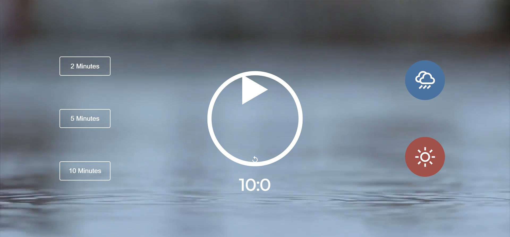
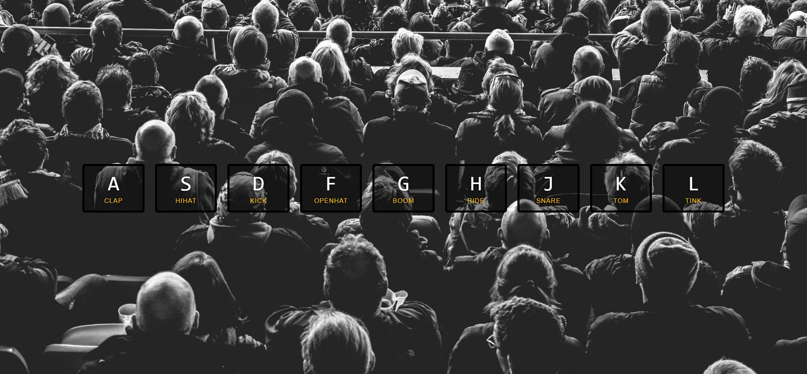
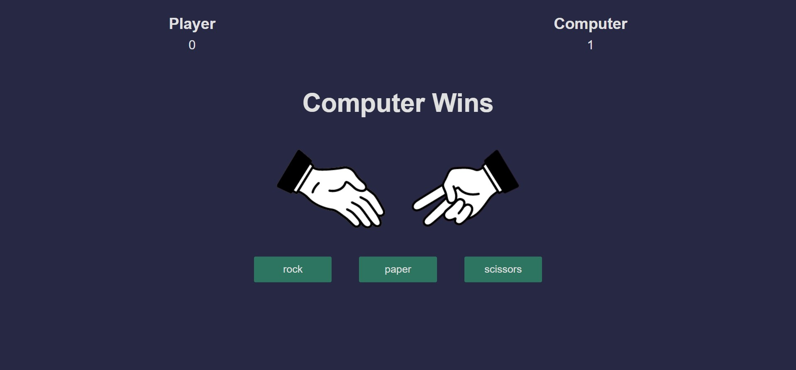
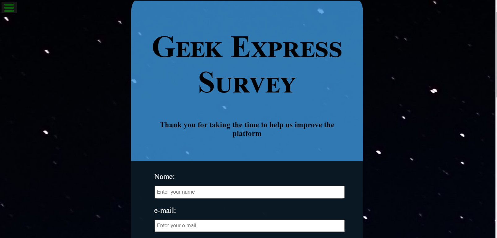
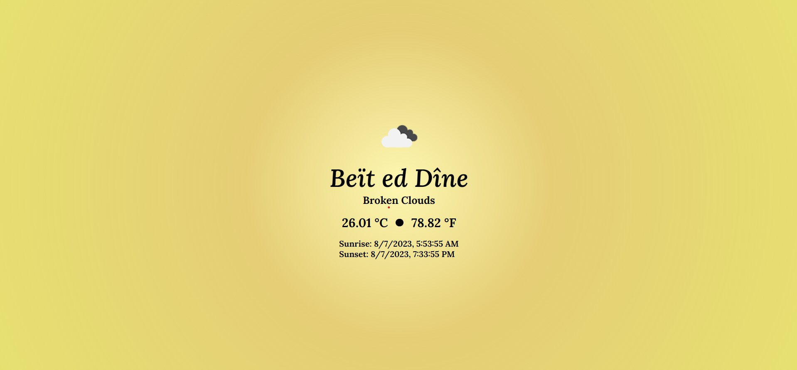
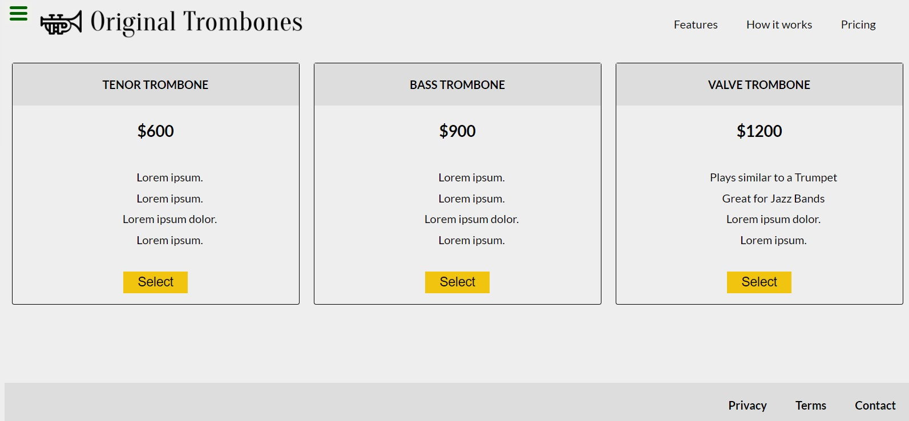

Geek Express Projects
Project Description
As a front-end web tutor, my mission is to empower students with the knowledge, skills, and confidence they need to excel in the dynamic field of web development. Through personalized instruction, hands-on learning experiences, and ongoing support, I strive to inspire and equip the next generation of front-end developers to achieve their goals and make a meaningful impact in the digital landscape.








Technologies Used
- HTML
- CSS
- bootstrap
- JavaScript
- JQuery
- Ajax
- Responsive
Project Features
- Customized Learning Approach:
- Tailored Curriculum: Each tutoring session is tailored to meet the individual needs and learning objectives of the student, ensuring a personalized learning experience.
- Hands-On Exercises: I provide hands-on exercises and real-world projects that allow students to apply their knowledge and skills in practical scenarios, reinforcing their understanding of key concepts.
- Comprehensive Skill Development:
- Front-End Technologies: Students gain proficiency in essential front-end technologies, including HTML, CSS, JavaScript, and responsive web design, enabling them to build visually appealing and user-friendly websites.
- Frameworks and Libraries: I introduce students to popular front-end frameworks and libraries such as Bootstrap and React empowering them to leverage these tools to streamline development workflows and create dynamic web applications.
- Interactive Learning Resources:
- Interactive Lessons: I conduct engaging and interactive lessons, incorporating multimedia content, coding challenges, and quizzes to reinforce learning and encourage active participation.
- Online Collaboration: Through online platforms and collaborative tools, students have the opportunity to engage in group discussions, share insights, and collaborate on projects, fostering a supportive learning community.
- Career Development Support:
- Portfolio Development: I assist students in creating a compelling portfolio showcasing their projects and skills, helping them demonstrate their capabilities to potential employers and clients.
- Interview Preparation: I offer guidance on interview techniques, resume writing, and portfolio presentation, preparing students to confidently showcase their expertise and land rewarding opportunities in the field of front-end development.
- Ongoing Mentorship:
- Continuous Support: I provide ongoing mentorship and support to students, offering feedback, guidance, and encouragement as they progress in their learning journey.
- Resources and Updates: I keep students informed about the latest trends, tools, and resources in front-end development, empowering them to stay current and adapt to evolving industry demands.